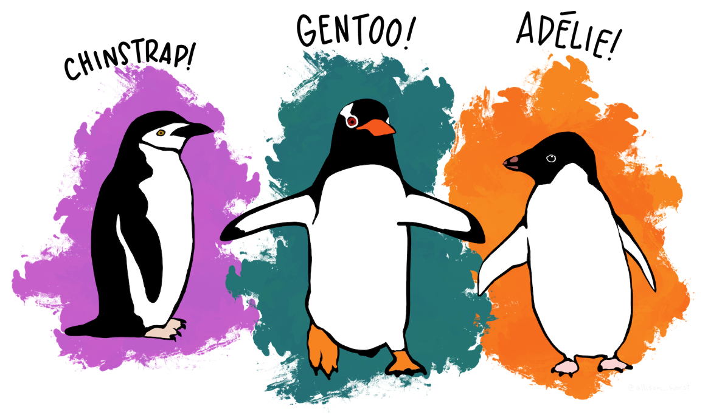
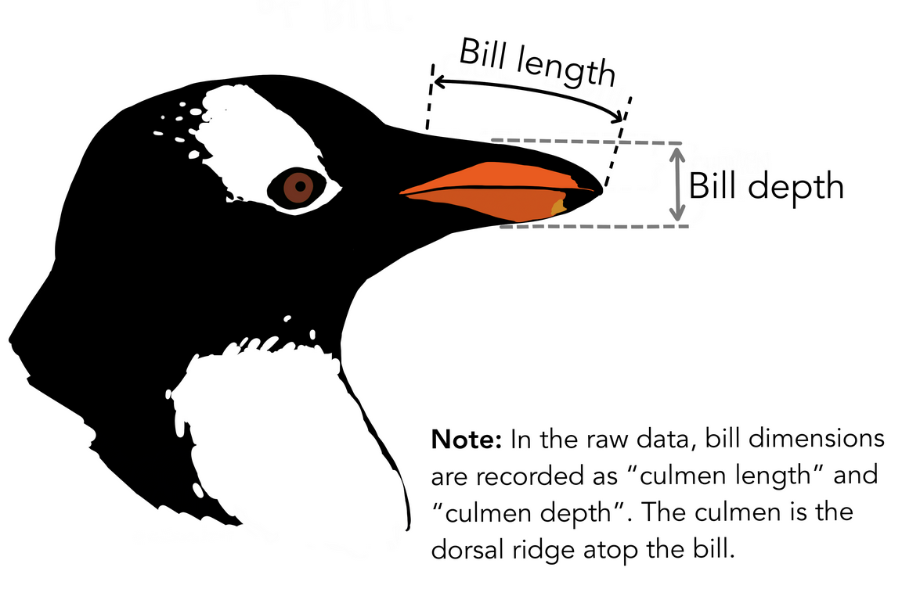
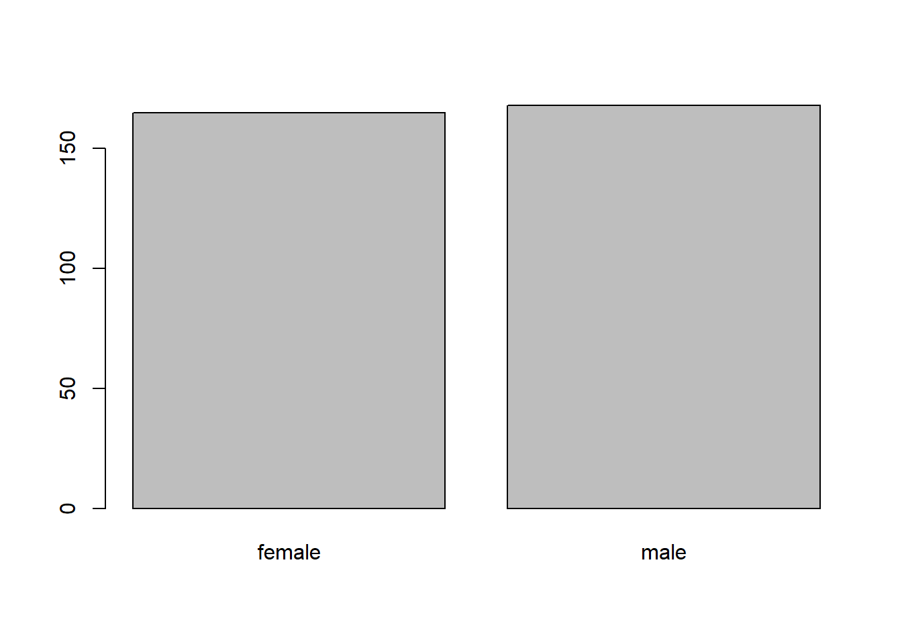

Dataframes
2022-10-12
Base de datos
library(palmerpenguins)
data(penguins)En la paquetería palmerpenguins, hay dos conjuntos de
datos. penguins es una versión simplificada de los datos
brutos, elaborado para la enseñanza.
Este conjunto de datos está alojado en la Estación Antártica Palmer LTER, miembro de la Red de Investigación Ecológica a Largo Plazo. Si es de su interés puede obtener más información sobre la investigación y la metodología de este conjunto de datos en el articulo Ecological sexual dimorphism and environmental variability within a community of Antarctic penguins (genus Pygoscelis).

Créditos de la imagen Allison Horst
La base de datos esta almacenado en formato separado por comas (.csv). Cada fila contiene información de fecha, isla, entre otros. La información de los atributos se puede encontrar en la ayuda:
?penguins
?penguins_raw
Créditos de la imagen Allison Horst
Importanto datos en R
El archivo debería descargarse en el destino especificado. R aún no
ha cargado los datos del archivo en la memoria. Para ello, podemos
utilizar la función read_csv() del paquete tidyverse.
Los paquetes en R son básicamente conjuntos de funciones adicionales
que te permiten hacer más cosas. Las funciones que hemos estado
utilizando hasta ahora, como round(), sqrt(),
o c() vienen incorporadas en R. Los paquetes le dan acceso
a funciones adicionales a R base. Una función similar a
read_csv() del paquete tidyverse es read.csv()
de R base. No tenemos tiempo para cubrir sus diferencias, pero observe
que la ortografía exacta determina qué función se utiliza. Antes de
utilizar un paquete por primera vez, debe instalarlo en su máquina, y
luego debe importarlo en cada sesión posterior de R cuando lo
necesite.
Para instalar el paquete tidyverse, podemos escribir
install.packages("tidyverse") directamente en la consola.
De hecho, es mejor escribir esto en la consola que en nuestro script
para cualquier paquete, ya que no es necesario reinstalar los paquetes
cada vez que ejecutamos el script. Entonces, para cargar el paquete
escribe:
library(tidyverse)Ahora podemos utilizar las funciones del paquete
tidyverse. Usemos read_csv() para leer los
datos (aprenderemos más sobre los dataframe más adelante):
penguins <- read_csv(path_to_file("penguins.csv"))Si tiene un archivo en formato csv, puede utilizar
read_csv para crear un objeto con el. La función
path_to_file() nos dirige a la ruta donde se encuentra el
archivo deseado.
Cuando se ejecuta read_csv en un archivo de datos, la
función busca en las primeras 1000 filas de cada columna y adivina su
tipo de datos. Por ejemplo, en este conjunto de datos,
read_csv() lee flipper_length_mm como
int (un tipo de dato numérico), y species como
char. Tiene la opción de especificar el tipo de datos de
una columna manualmente utilizando el argumento col_types
en read_csv.
Podemos ver el contenido de las primeras líneas de datos escribiendo
el nombre del objeto penguins. Por defecto, esto le
mostrará tantas filas y columnas de los datos como quepan en su
pantalla. Si quieres las primeras 50 filas, puedes escribir
print(pingüinos, n = 50).
También podemos extraer las primeras líneas de estos datos utilizando
la función head():
head(penguins)## # A tibble: 6 × 8
## species island bill_length_mm bill_depth_mm flipper_length_mm body_…¹ sex year
## <chr> <chr> <dbl> <dbl> <dbl> <dbl> <chr> <dbl>
## 1 Adelie Torgersen 39.1 18.7 181 3750 male 2007
## 2 Adelie Torgersen 39.5 17.4 186 3800 fema… 2007
## 3 Adelie Torgersen 40.3 18 195 3250 fema… 2007
## 4 Adelie Torgersen NA NA NA NA <NA> 2007
## 5 Adelie Torgersen 36.7 19.3 193 3450 fema… 2007
## 6 Adelie Torgersen 39.3 20.6 190 3650 male 2007
## # … with abbreviated variable name ¹body_mass_gNOTA:
read_csvasume que los campos estan delimitados por comas. Sin embargo, en varios países se utiliza la coma como separador de decimales y el punto y coma (;) como delimitador de campos. Si desea leer este tipo de archivos en R, puede utilizar la funciónread_csv2. Se comporta exactamente igual queread_csvpero utiliza parámetros diferentes para el decilas y los separadores de campo. Si se trabaja con otro formato, ambos pueden ser especificados por el usuario. Consulte la ayuda deread_csv()escribiendo?read_csvpara obtener más información. También existe la funciónread_tsvpara archivos de datos separados por tabulaciones, yread_delimpermite especificar más detalles sobre la estructura de su archivo.
Que son los dataframe
Un dataframe es la representación de los datos en formato de una tabla donde las columnas son vectores que tienen todos la misma longitud. Los dataframe son análogos a las hojas de cálculos de un documento Excel, con una importante diferencia: Las columnas son vectores y cada una debe contener un único tipo de dato (por ejemplo, caracteres, enteros o factores). Por ejemplo, a continuación se muestra una figura que representa un marco de datos que comprende un vector numérico, uno de caracteres y uno lógico.

Se puede inspeccionar la estructura de la base de datos con la
función str()
str(penguins)Inspeccionando un dataframe
Ya vimos cómo las funciones head() y str()
pueden ser útiles para explorar el contenido y la estructura de una base
de datos. A continuación veremos algunas otras funciones útiles para
explorar una base de datos:
Tamaño:
dim()- muestra las dimensiones del objetonrow()- muestra el número de filasncol()- muestra el número de columnas
Contenido
head()- muestra los primeras 6 filastail()- muestra las últimas 6 filas
Nombres
names()- muestra los nombres de columnasrownames()- muestra los nombres de las filas
Resumen
str()- muestra la estructura de un dataframesummary()- resume los principales estadísticos de cada columna
# PREGUNTAS
# ¿Cuál es la clase del objeto penguins?
# Cuántas filas y columnas tiene el objeto penguinsIndexación y sub-conjuntos
La base de datos de pingüinos tiene filas y columnas (tiene 2 dimensiones). En la práctica, puede que no necesitemos todas las observaciones; por ejemplo, puede que sólo nos interese un subconjunto de las observaciones (las filas) o un conjunto concreto de variables (las columnas). Si queremos extraer algunos datos específicos debemos especificar las “coordenadas” que queremos. Los números de las filas van primero, seguidos de los números de las columnas.
# Extraemos valores específicos de filas y columnas
# La estructura a seguir es la siguiente:
# data_frame[indice_fila, indice_columna]
# Extrae la primera fila y columna de penguins
penguins[1,1]
# Primera fila y octava columna
penguins[1, 8]
# Podemos usar abreviaturas para seleccionar el número de
# filas o columnas. Por ejemplo, para seleccionar todas las
# columnas deje el índice en blanco.
# Selecciona todas las columnas para la primera fila (obs)
penguins[1,]
# La misma lógica funciona para las filas
# Para selecionar la primera columna con todas sus
# observaciones hacemos lo siguiente:
penguins[,1]
# Para seleccionar múltiples filas o columnas, utilize vectores!
# Selecciona las primeras 3 filas con la quinta y sexta columna
penguins[c(1,2,3), c(5,6)]
# Podemos usar el operador : para crear vectores
penguins[1:3, 5:6]
# Como vemos, cuando se trabaja con tibbles se puede extraer un sub-conjunto de datos usando los corchetes simples ([]).
# Sin embargo, el resultado seguirá siendo un formato tibble. Si deseas unicamente el vector, debemos utilizar doble corchete([[]]).
# Por ejemplo, para obtener la 1ra columna del objeto penguins como vector escribimos:
penguins[[1]]
# Para obtener el primer elemento de nuestra base de datos
penguins[[1,1]]: es una función especial que crea vectores numéricos
enteros en orden creciente o decreciente (escribe en tu consola 1:10 o
10:1). También se puede excluir ciertos índices de un dataframe
empleando el signo -
penguins[, -1] # Excluye la 1ra fila de la base de datos
penguins[-(7:nrow(penguins)),] # equivale a la función head()Los datos pueden ser extraídos ya sea indicando las posiciones (como vimos anteriormente) o llamandolos directamente por los nombres de sus columnas.
# Usando corchetes como vimos anteriormente
penguins["species"]
penguins[, "species"]
# Usando doble corchete obtenemos un vector
penguins[["species"]]
# Otra forma de extraer las columnas de un dataframe es
# empleando el operador $ seguido del nombre de la columna
penguins$species# Ejercicios
# 1. Crear un data.frame (penguins_200) que contenga únicamente los elementos de la fila 200 del objeto penguins
# 2. Observa como nrow() te da el número de filas del objeto penguins
#a) Usa este número para extraer la última fila del objeto penguins
#b) Cree una nueva base de datos que contenga sólo la última fila del objeto penguins
# 3. Use nrow() para extraer la fila que se encuentra en el centro de la base de datos penguins.
# Almacene el resultado en un objeto llamado penguins_middle.
# 4. Combina nrow() con el signo - para reproducir los resultados que se obtienen al escribir head(penguins).Factores
Cuando escribimos str(pingüinos) observamos que varias
de las columnas son de la clase integers. Sin embargo, las
columnas specie, island y sex son
de la clase character. Podría decirse que estas columnas
contienen datos categóricos, es decir, que sólo pueden tomar un número
limitado de valores.
R tiene una clase especial para trabajar con datos categóricos,
llamada factor. Los factores son muy útiles y, de hecho,
contribuyen a que R sea especialmente adecuado para trabajar con datos.
Así que vamos a dedicar un poco de tiempo a introducirlos.
Una vez creados, los factores sólo pueden contener un conjunto predefinido de valores, conocidos como niveles. Los factores se almacenan como enteros asociados a etiquetas y pueden estar ordenados o desordenados. Aunque los factores parecen (y a menudo se comportan) como vectores de caracteres, en realidad son tratados como vectores enteros por R. Así que hay que tener mucho cuidado al tratarlos como cadenas.
Al importar una base de datos con read_csv(), las
columnas que contienen texto son reconocidas como
character. Sin embargo, una vez importado los datos podemos
hacer la conversión utilizando la función factor()
# Crea una variable que tiene dos niveles
low_hi <- c("low", "high", "low", "high")
summary(low_hi)
# Convirtiendo a factor
low_hi <- factor(low_hi)Podemos corroborar que la conversión ha funcionado utilizando de
nuevo la función summary(). Esto produce una tabla con los
recuentos para cada nivel de factor:
summary(low_hi)## high low
## 2 2R asignará 1 al nivel "high" y
2 al nivel "low" (se ordena en función al
abecedario, h viene antes que l). Puede ver esto usando la función
levels() y puede encontrar el número de niveles usando nlevels():
levels(low_hi)
nlevels(low_hi)A veces, el orden de los factores no importa, otras veces puede querer especificar el orden porque es significativo (por ejemplo, “low”, “middle”, “high”), mejora su visualización, o es requerido por un tipo particular de análisis. En este caso, una forma de reordenar nuestros niveles:
low_hi # orden actual
low_hi <- factor(levels = c("low", "high"))
low_hi # despues de re-ordenar# Ejercicio
# 1. Cambia las columnas species e island del objeto penguins a factor
# 2. Utilizando las funciones que has aprendido, averiguar ¿Cuántas filas contiene la especies Adelie?
# 3. ¿Cuántas niveles contiene la variable island?Convirtiendo factores
Si necesitas convertir un factor en un vector de caracteres, utiliza
as.character(x).
as.character(low_hi)En algunos casos, es posible que tenga que convertir los factores
cuyos niveles aparecen como números (como los niveles de concentración o
los años) en un vector numérico. Por ejemplo, en una parte de su
análisis puede ser necesario codificar los años como factores (por
ejemplo, comparando pesos medios entre años) pero en otra parte de su
análisis puede ser necesario almacenarlos como valores numéricos (por
ejemplo, haciendo operaciones matemáticas con los años). Esta conversión
de factor a numérico es un poco más complicada. La función
as.numeric() devuelve los valores de índice del factor, no
sus niveles, por lo que dará como resultado un conjunto de números
completamente nuevo (y no deseado en este caso). Un método para evitar
esto es convertir los factores en caracteres, y luego en números.
year_fct <- factor(c(1991, 1992, 1993, 1994, 1995))
as.numeric(year_fct) # Error! y no hay advertencias!
as.numeric(as.character(year_fct)) # funcionaRenombrando factores
Cuando los datos se almacenan como un factor, puede exporar rápidamente el número de observaciones que representa cada nivel del factor. Veamos el número de hombres y mujeres observados:
penguins$sex <- factor(penguins$sex)
plot(penguins$sex)
Sin embargo, como vimos anteriormente al utilizar
summary(penguins$sex), existen 11 individuos para los que
no se ha registrado la información sobre el sexo. Para mostrarlos en el
gráfico, podemos convertir los valores que faltan (NA) en un nivel de
factor con la función addNA(). También tendremos que dar
una etiqueta al nuevo nivel de factor. Vamos a trabajar con una copia de
la columna de sex, por lo que no vamos a modificar la base
de datos original
# Observamos 11 valores NAs
summary(penguins)
# Aislamos la variable sexo
sex <- penguins$sex
# Exploramos los niveles
levels(sex)
# Agregamos valores NA
sex <- addNA(sex)
head(sex)
# Agregamos una etiqueta los NA
levels(sex)[3] <- "indeterminado"
levels(sex)
# Graficamos
plot(sex)# Ejercicio
# 1. Renombra los niveles "female" y "male" de la variable sex por "F" y "M" respectivamente.
# 2. Luego recree el gráfico de barras anterior en el siguiente orden: indeterminado, F, M# Ejercicio
# Corrija los siguientes códigos y hagalo funcionar
animal_data <- data.frame(animal = c(dog, "sea cucumber", "sea urchin"),
feel = c("furry", "squishy", "spiny"),
weight = c(45, 8 1.1, 0.8))country_climate <- data.frame(country = c("Canada", "Panama", "South Africa", "Australia"),
climate = c("cold", "hot", "temperate", "hot/temperate"),
temperature = c(10, 30, 18, "15"),
northern_hemisphere = c(TRUE, TRUE, FALSE, "FALSE"),
has_kangaroo = c(FALSE, FALSE, FALSE, 1))
# ¿puede predecir la clase de cada columna del dataframe?
# ¿Qué tendría que cambiar para asegurar que cada columna tuviera el tipo de datos correcto?Formato Fechas
Un problema común que tienen los usuarios nuevos (¡y experimentados!) de R es convertir la información de fecha y hora en una variable que sea adecuada para los análisis. Una forma de almacenar la información de la fecha es almacenar cada componente de la fecha en una columna separada.
Vamos a utilizar la funciónymd() del paquete
lubridate (que pertenece al universo tidyverse).
lubridate se instala como parte de la instalación del
tidyverse. Cuando se carga la paquetería
tidyverse (library(tidyverse)), se cargan los
paquetes principales (los paquetes utilizados en la mayoría de los
análisis de datos). lubridate, sin embargo, no pertenece al
núcleo del tidyverse, por lo que hay que cargarlo explícitamente con
library(lubridate).
library(lubridate)El paquete lubridate tiene muchas funciones útiles para
trabajar con fechas. Éstas pueden ayudarle a extraer fechas en
diferentes formatos, convertir entre zonas horarias, calcular
diferencias horarias y mucho más. Puedes encontrar un resumen de todas
las funciones en el fichero
de lubridate.
Vamos a crear un objeto e inspeccionar su estructura:
str("2022-01-02")## chr "2022-01-02"Tenga en cuenta que R lee esto como un carácter. Para transformarlo a
formato fecha usaremos la función ymd(), que toma un vector
que representa el año, mes y día y lo convierte en un vector fecha.
Date es una clase de datos reconocida por R como una fecha
y puede ser manipulada como tal. El argumento que requiere la función es
flexible, pero, como mejor práctica, es un vector de caracteres
formateado como “AAAA-MM-DD”.
my_date <- c("2022-01-02")
my_date <- ymd(my_date)
str(my_date)## Date[1:1], format: "2022-01-02"Ahora vamos a extraer la columna Date_egg de la base de
datos penguins_raw e inspeccionaremos su estructura.
egg_dates <- penguins_raw$`Date Egg`
str(egg_dates)## Date[1:344], format: "2007-11-11" "2007-11-11" "2007-11-16" "2007-11-16" "2007-11-16" ...Podemos extraer el año, el mes y el día de los valores de la fecha:
egg_yr <- year(egg_dates)
egg_mo <- month(egg_dates)
egg_day <- day(egg_dates)Cuando importamos los datos en R, read_csv() reconoció
que esta columna contenía información sobre la fecha. Por esta razón
podemos utilizar las funciones day(), month()
y year() para extraer la información de la fecha, y crear
nuevas columnas en nuestra base de datos.
# Podemos crear un dataframe
egg_dates_df <- data.frame(year = egg_yr,
month = egg_mo,
day = egg_day)
head(egg_dates_df)## year month day
## 1 2007 11 11
## 2 2007 11 11
## 3 2007 11 16
## 4 2007 11 16
## 5 2007 11 16
## 6 2007 11 16Estos vectores pueden ser usados como argumentos para la función
ymd():
ymd(paste(egg_dates_df$year, egg_dates_df$month, egg_dates_df$day, sep = "-"))En nuestro ejemplo anterior, la columna Date Egg se leyó
correctamente como una variable Date, pero generalmente no
es así. Las columnas de fecha suelen leerse como variables de carácter y
se puede utilizar la función as_date() para convertirlas al
formato apropiado de Date/POSIXct.
Digamos que tenemos un vector de fechas en formato de caracteres:
char_dates <- c("01/15/2020", "02/05/2020", "03/17/2020")
str(char_dates)## chr [1:3] "01/15/2020" "02/05/2020" "03/17/2020"Podemos convertir este vector a fecha:
as_date(char_dates, format = "%m/%d/%Y")## [1] "2020-01-15" "2020-02-05" "2020-03-17"El formato del argumento indica a la función as_date el
orden en que debe analizar los caracteres e identificar el mes, el día y
el año. El formato anterior es el equivalente a mm/dd/aaaa. Un formato
incorrecto puede dar lugar a errores de análisis o a resultados
incorrectos.
Por ejemplo, observe lo que ocurre cuando utilizamos un formato
"%d/%m/%Y". Dado que no hay meses que sean mayor a 12, el
primer y tercer elemento no pueden ser analizados.
as_date(char_dates, format = "%d/%m/%Y")## Warning: 2 failed to parse.## [1] NA "2020-05-02" NA